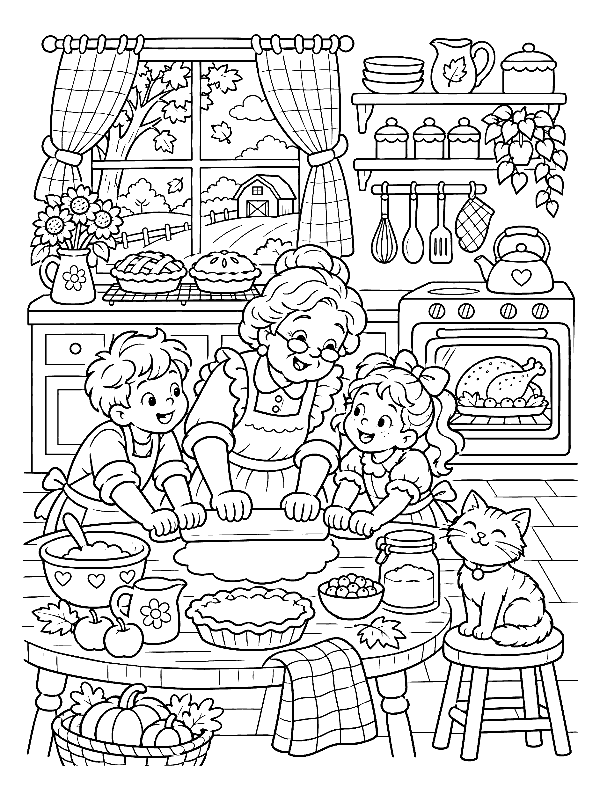
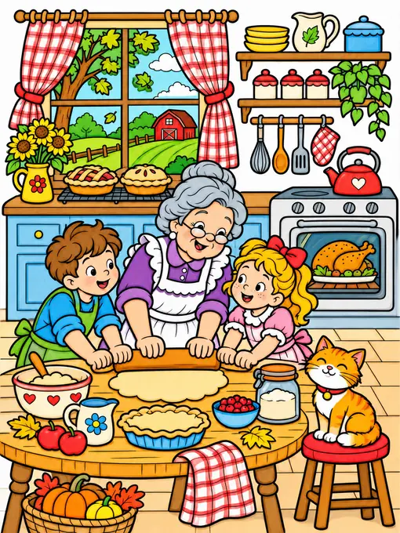

Grandma's Kitchen Coloring Page
Whimsical Free printable · Letter and A4
A cozy kitchen with a grandmother and two kids rolling pie dough, a cat on a stool, pies cooling on the windowsill and a turkey in the oven.

Color ideas
Here is one way to color it. Good colors to pull out: tan, brown, peach, dark brown, gold, sky blue.
Want this small colored picture printed in the corner of the page as a guide? Open the print options and switch on Color guide.
About this page
A storybook scene with medium detail and plenty to find. Great for kids about 6 to 10.
It prints on one sheet of regular paper. For markers, use heavier paper or put a spare sheet underneath. In the print options you can also print two per sheet, switch to light gray lines, or add a name line.